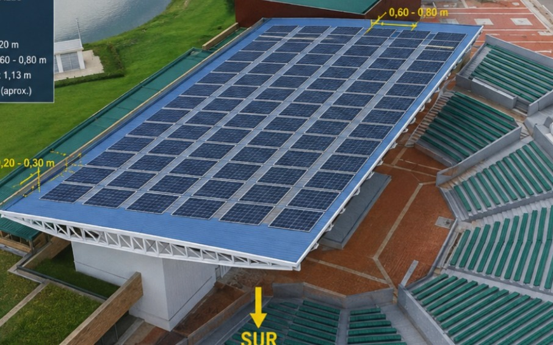

KINETIX
Dynamic Systems
«"Donde la precisión mecánica y la visión digital optimizan el futuro industrial."»
- Samuel Esteban Sánchez Álvarez
- Justin David Mendoza Ortiz
- Santiago García Fajardo
- José Arturo Aguirre Chaparro
Universidad Militar Nueva Granada, 2026
KINETIX
Dynamic Systems
Empresa de ingeniería y tecnología enfocada en cuatro pilares:
Infraestructura
Diseño y construcción de espacios que protegen y ordenan el entorno.
Automatización
Sensores y actuadores que responden al clima en tiempo real.
Sostenibilidad
Materiales reciclados y energía solar integrados desde el diseño.
Innovación tecnológica
Simulación 3D, control inteligente y experiencias digitales.
Nuestro proyecto: EcoTense
Tres ingenierías
Mecatrónica
- Automatización
- Sensores
- Actuadores
- Control del sistema
Industrial
- Optimización
- Materiales
- Riesgos
- Mantenimiento
Multimedia
- Marketing
- Identidad visual
- Contenido digital
- Comunicación de la empresa
Concha acústica UMNG
Problema principal: exposición a lluvia y viento.
- 01 Interrupción de eventos
- 02 Limitación del uso del espacio
- 03 Deterioro de infraestructura
- 04 Afectación a asistentes y equipos

EcoTense
Cubierta retráctil inteligente

Sistema EcoTense
Energía: sistema fotovoltaico + almacenamiento energético
Sostenibilidad
- ♻️ PET reciclado: aprovechamiento de material proveniente de la planta de tratamiento universitaria.
- ☀️ Energía solar: alimentación mediante sistema fotovoltaico.
- 🔄 Economía circular: transformación de residuos en nuevos recursos.
Resultado: infraestructura + tecnología + sostenibilidad.
¿Cómo llegamos al cliente?
Público objetivo
- Universidades
- Centros culturales
- Escenarios deportivos
- Entidades públicas y privadas
Estrategias
- Redes sociales
- Página web
- Publicidad digital
- Videos y renders
- Presentaciones comerciales
¿Por qué KINETIX?
No ofrecemos únicamente una cubierta. Integramos:
Infraestructura
Automatización
Sostenibilidad
Comunicación digital
EcoTense — una solución adaptable, automatizada y sostenible.
KINETIX
Dynamic Systems
EcoTense
Protegemos espacios. Automatizamos soluciones. Construimos un futuro sostenible.
«“Donde la precisión mecánica y la visión digital optimizan el futuro industrial.”»